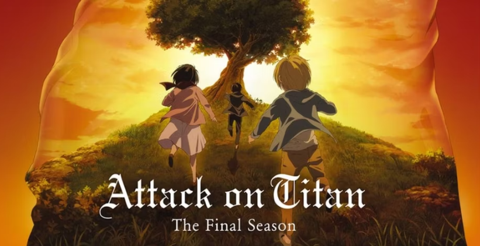

Por Thiago Freitas - 6 de março de 2024
“Attack on Titan Final Season SPECIAL EVENT 2022” foi anunciado no site oficial da série com uma nova obra de arte impressionante do designer de personagens do anime, Tomohiro Kishi. A imagem mostra as versões infantis de Eren, Armin e Mikasa correndo em direção a uma grande árvore em primeiro plano e um Eren adulto contemplativo ao fundo. O evento começará em 13 de novembro com um concerto orquestral no Tachikawa Stage Garden, em Tóquio, apresentando o trabalho do compositor Kohta Yamamoto e dos intérpretes Yuko Ando e Ai Higuchi. Haverá também um painel de dubladores, que contará com as participações de Yuki Kaji (Eren), Yui Ishikawa (Mikasa), Marina Inoue (Armin), Kisho Taniyama (Jean), Hiro Shimono (Connie), Romi Park (Hange) e Ayane Sakura (Gabi).